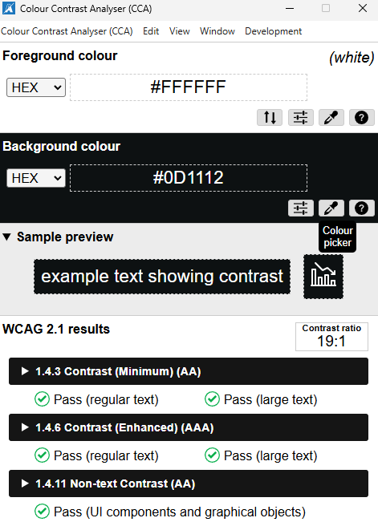
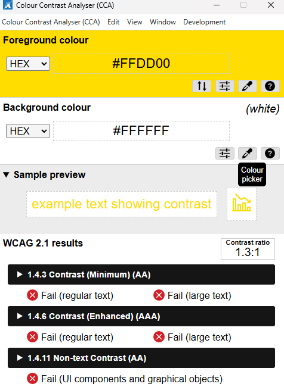
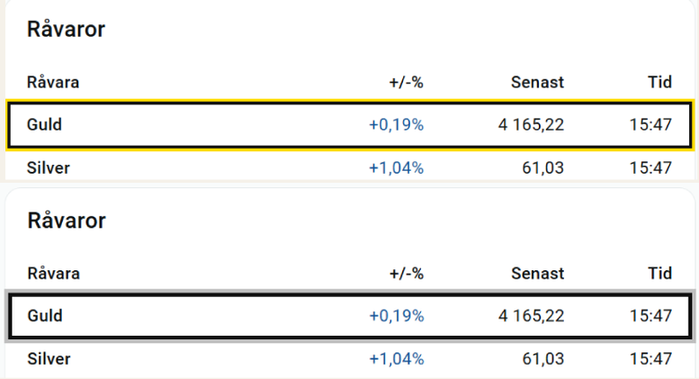
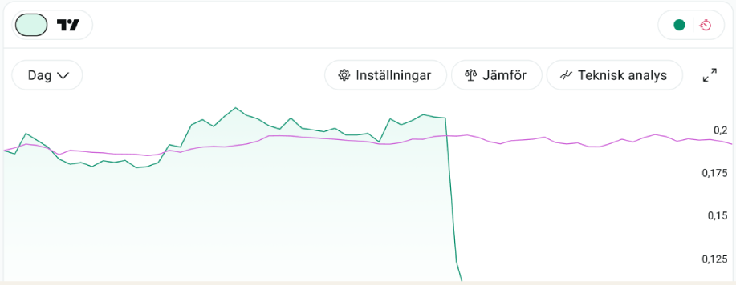
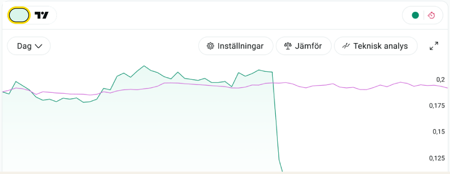
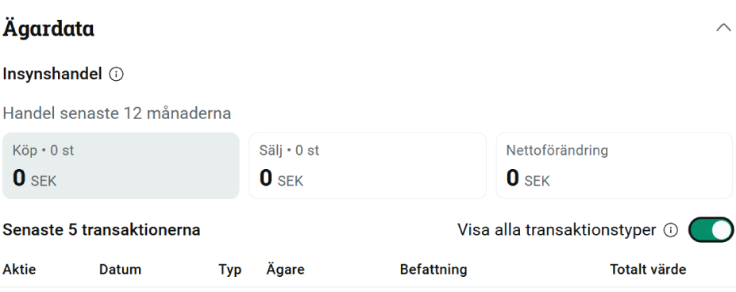
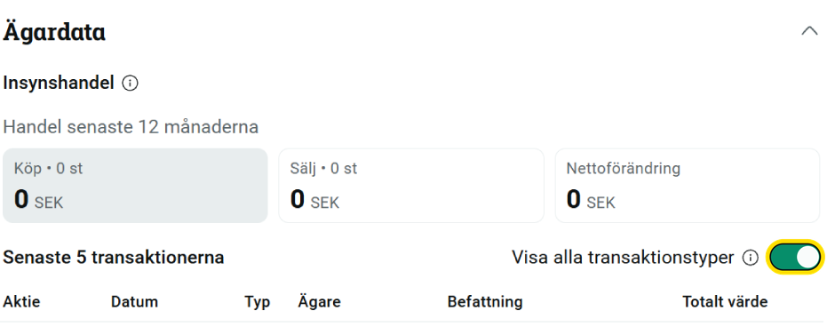

Avanza A11y Audit
Exploring how keyboard focus and the presentation of dense financial information can support a clearer interaction experience.
Context & approach
For this accessibility course, the brief was to take responsibility for accessibility work within an organisation and recommend improvements to colleagues working in design and development, considering both immediate changes and long-term practice. I independently chose Avanza’s public website for the review. My focus was on keyboard focus visibility for keyboard users and cognitive accessibility, exploring how the presentation of dense financial information could reduce unnecessary cognitive load.
Contrast ≠ Visibility
Where did the focus go?
Can you spot it right away?
When I moved from “Fondfaktablad” to “Om erbjudandet” with the keyboard, focus jumped to another part of the page. I found myself pausing to locate it. The indicator existed, but it did not immediately draw my attention.
The keyboard focus indicator measured 19:1 against the white background, exceeding the minimum 3:1 contrast ratio required by WCAG 1.4.11 Non-text Contrast at Level AA. However, sufficient contrast did not make the focus position immediately noticeable during keyboard navigation.

My proposal for clearer keyboard focus
I proposed a 3px dark ring with a further 3px yellow outer halo. The thicker shape and supplementary colour aim to make the current focus position easier to distinguish from surrounding information.
Proposed focus style with a 3px dark ring and 3px yellow halo.
Why yellow?

Yellow against white did not meet the contrast threshold on its own. I used it as an additional visual cue rather than the sole focus indicator. The dark ring provides a distinct boundary, while yellow helps differentiate the treatment from the many dark numbers and labels on the page.
The proposal uses both colour and thickness. A grayscale comparison illustrates that the dark shape remains, but does not replace testing with users or checking each component’s adjacent colours.

Focus on coloured controls




Content ≠ Clarity
On a stock detail page, I reviewed the company information, reports, trading figures, and broker statistics below the chart. The data was useful, but I found it difficult to quickly match values with their labels.
From a cognitive accessibility perspective, I considered the visual search effort needed to find and interpret a value. Competing visual cues and inconsistent emphasis may increase extraneous cognitive load, making users spend more effort working out the layout before they can understand the financial data.
Original and proposed layouts. Financial figures may vary.
Simpler company information and removal of unnecessary icons
Kept a short company introduction with “Visa mer” for more detail, and removed decorative icons from the reports.
Clearer financial figures
Separated traded amount, volume, and average price, with a clearer visual hierarchy between labels, values, and units.
Consistent typography
Made font sizes and weights consistent across the labels and figures in the broker statistics.
Clearer link text
Changed “Se alla” to “Se alla transaktioner” so users know what they will see before clicking.
These proposals address processing demands without simplifying the underlying financial content. Reduced cognitive load is an intended benefit, not a measured outcome.
Reflection & next steps
Meeting accessibility standards and using a page can feel different. The focus indicator passed the contrast check, but I still struggled to spot it while navigating with the keyboard. Even if an improvement is not essential for most users, I think it deserves attention before someone has to report a problem. Accessibility needs ongoing care.
Avanza’s public accessibility information provides context for the review. That information does not tell me how often they test internally, but I would recommend making accessibility testing with users a regular part of product development.
This independent accessibility case study was completed as part of my coursework, without affiliation with or endorsement by Avanza.